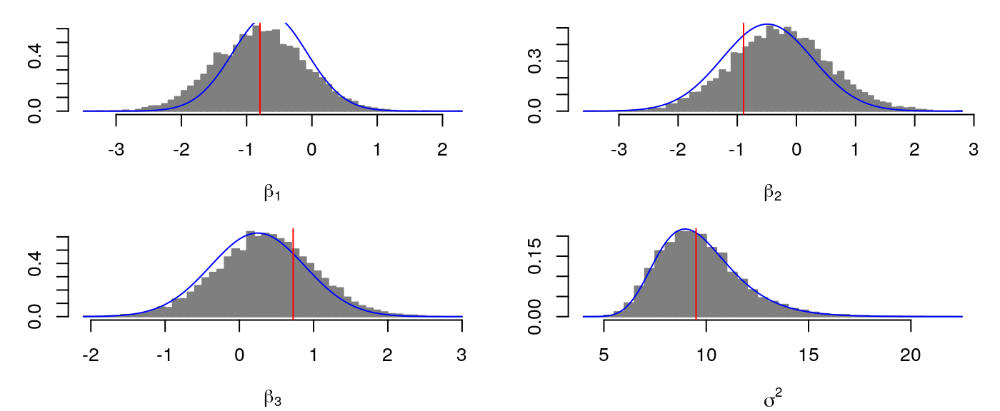
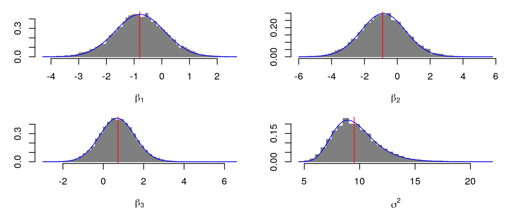
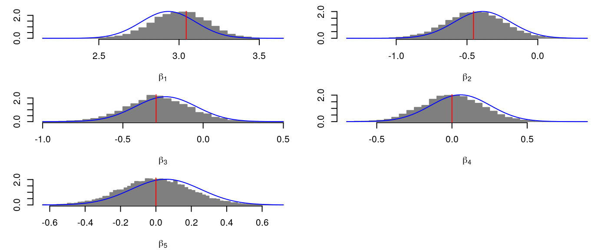
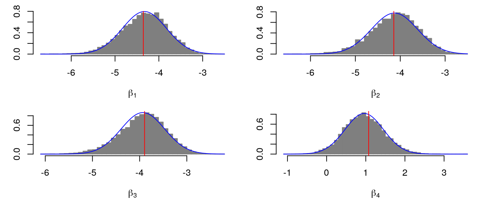

examples.Rmdversion
_
platform x86_64-pc-linux-gnu
arch x86_64
os linux-gnu
system x86_64, linux-gnu
status
major 3
minor 6.3
year 2020
month 02
day 29
svn rev 77875
language R
version.string R version 3.6.3 (2020-02-29)
nickname Holding the Windsock
library(varapproxr)
library(rstanarm)
library(brms)
library(tidyverse)
library(survival)
library(invgamma)n <- 50 beta <- c(-1, 0, 1) sigma <- 3 x1 <- runif(n) x2 <- sample(c(0, 1), n, replace = T) X <- cbind(1, x1, x2) y <- drop(X%*%beta + rnorm(n, 0, sigma)) D <- data.frame(x1 = x1, x2 = x2, y = y) mu0 <- rep(0, length(beta)) Sigma0 <- diag(1, length(beta)) a0 <- 1e-2 b0 <- 1e-2 fit_freq <- lm(y ~ x1 + x2) prior<-c( set_prior("normal(0, 1)", class = "Intercept"), set_prior("normal(0, 1)", class="b"), set_prior("inv_gamma(1e-2, 1e-2)", class="sigma")) fit_hmc1 <- brm( y ~ x1 + x2, data = D, family = gaussian(), prior = prior, refresh = 0, chains = 4, iter = 5000) prior<-c( set_prior("normal(0, 5)", class = "Intercept"), set_prior("normal(0, 5)", class="b"), set_prior("student_t(1, 0, 0.1)", class="sigma")) fit_hmc2 <- brm( y ~ x1 + x2, data = D, family = gaussian(), prior = prior, refresh = 0, chains = 4, iter = 5000)
fit_vb1 <- vb_lm(X, y, mu0, Sigma0, a0, b0) fit_vb2 <- vb_lm(X, y, mu0, diag(5^2, ncol(X)), 0.1, 1, prior = 2) fit_vb_online1 <- vb_lm(X[1:25, ], y[1:25], mu0, Sigma0, a0, b0) fit_vb_online2 <- update_vb_lm(fit_vb_online1, X[26:50, ], y[26:50])
beta <- as.matrix(fit_hmc1) par(mfrow = c(2, 2), mar = c(4, 3, 1, 1)) for(i in 1:ncol(X)) { hist(beta[, i], freq = F, breaks = 50, main = "", xlab = bquote(beta[.(i)]), col="grey50",border="grey50") curve(dnorm(x, fit_vb1$mu[i,1], sqrt(fit_vb1$Sigma[i, i])), add = T, col = "blue") abline(v = coef(fit_freq)[i], col = "red") } hist(beta[, 4]^2, freq = F, breaks = 50, main = "", xlab = bquote(sigma^2), col="grey50",border="grey50") curve(dinvgamma(x, fit_vb1$a, fit_vb1$b), add = T, col = "blue") abline(v = sigma(fit_freq)^2, col = "red")

beta <- as.matrix(fit_hmc2) par(mfrow = c(2, 2), mar = c(4, 3, 1, 1)) for(i in 1:ncol(X)) { hist(beta[, i], freq = F, breaks = 50, main = "", xlab = bquote(beta[.(i)]), col="grey50",border="grey50") curve(dnorm(x, fit_vb2$mu[i,1], sqrt(fit_vb2$Sigma[i, i])), add = T, col = "blue") abline(v = coef(fit_freq)[i], col = "red") } hist(beta[, 4]^2, freq = F, breaks = 50, main = "", xlab = bquote(sigma^2), col="grey50",border="grey50") curve(dinvgamma(x, fit_vb2$a, fit_vb2$b), add = T, col = "blue") abline(v = sigma(fit_freq)^2, col = "red")

\[ \begin{aligned} y|\beta;n &\sim \text{Poisson}(\mu/n) \\ \beta &\sim N(\mu_0,\Sigma_0) \\ \ln \mu &= \ln n + X\beta \\ \mathcal{L}(\mu_\beta,\Sigma_\beta) &= \mathbb E[\ln p(y,\beta)] + \mathbb H_q[\beta] \\ &= \mathbb E[\ln p(y|\beta) + \ln p(\beta)] + \mathbb H_q[\beta] \\ \mathbb E[\ln p(y|\beta)] &= y^\top(\ln n + X\mu_\beta) - 1^\top\exp(\ln n + X\mu_\beta + \text{diag}(X\Sigma_\beta X^\top)/2) - 1^\top\ln(y!)\\ \mathbb E[\ln p(\beta)] &= -\frac{1}{2}\left[d\ln(2\pi)+\ln|\Sigma_0| + (\mu_\beta-\mu_0)^\top\Sigma_0^{-1}(\mu_\beta-\mu_0) + \text{tr}(\Sigma_0^{-1}\Sigma_\beta)\right] \\ \mathbb H_q[\beta] &= \frac{1}{2}\left[d(1 + \ln(2\pi)) + \ln|\Sigma_\beta|\right]\\ D_{\mu_\beta}(\mathcal{L}) &= X^\top(y - \exp(\ln n + X\mu_\beta + \text{diag}(X\Sigma_\beta X^\top)/2))-\Sigma_0^{-1}(\mu_\beta-\mu_0) \\ H_{\mu_\beta}(\mathcal{L}) &= -X^\top\text{diag}(\exp(\ln n + X\mu_\beta + \text{diag}(X\Sigma_\beta X^\top)/2))X-\Sigma_0^{-1} \end{aligned} \]
counts <- c(18,17,15,20,10,20,25,13,12) outcome <- gl(3,1,9) treatment <- gl(3,3) D <- data.frame(treatment, outcome, counts) # showing data pois_freq <- glm(counts ~ outcome + treatment, family = poisson()) X <- model.matrix(pois_freq) y <- counts n <- numeric(length(counts)) + 1 pois_vb <- vb_pois_reg(X, y, n, rep(0, ncol(X)), diag(1, ncol(X))) pois_hmc <- stan_glm( counts ~ outcome + treatment, data = D, family = poisson(link = "log"), prior_intercept = normal(location = 0, scale = 1), prior = normal(location = 0, scale = 1), refresh = 0, chains = 4, iter = 5000) beta <- as.matrix(pois_hmc, "b_") par(mfrow = c(3, 2), mar = c(4, 3, 1, 1)) for(i in 1:ncol(X)) { hist(beta[, i], freq = F, breaks = 50, main = "", xlab = bquote(beta[.(i)]), col="grey50",border="grey50") curve(dnorm(x, pois_vb$mu[i,1], sqrt(pois_vb$Sigma[i, i])), add = T, col = "blue") abline(v = coef(pois_freq)[i], col = "red") }

data(leukemia, package = "survival") leukemia <- as_tibble(leukemia) %>% mutate(id = seq_len(n())) %>% select(id, everything()) cut_three <- unname(c(quantile(leukemia$time, probs = c(1/3, 2/3)), max(leukemia$time) + 1) %>% round()) leukemia_three <- survSplit(formula = Surv(time, status) ~ ., data = leukemia, cut = cut_three) %>% mutate(interval = factor(tstart), interval_length = time - tstart) %>% as_tibble fit_freq <- glm(formula = status ~ -1 + interval + x + offset(log(interval_length)), data = leukemia_three, family = poisson(link = "log")) %>% summary fit_hmc <- stan_glm( formula = status ~ -1 + interval + x + offset(log(interval_length)), data = leukemia_three, family = poisson(link = "log"), prior = normal(location = 0, scale = 4), refresh = 0, chains = 4, iter = 5000) X <- model.matrix( ~ -1 + interval + x, data = leukemia_three) y <- leukemia_three$status n <- leukemia_three$interval_length fit_vb <- vb_pois_reg(X, y, n, rep(0, ncol(X)), diag(4^2, ncol(X))) beta <- as.matrix(fit_hmc) par(mfrow = c(2, 2), mar = c(4, 3, 1, 1)) for(i in 1:ncol(X)) { hist(beta[, i], freq = F, breaks = 50, main = "", xlab = bquote(beta[.(i)]), col="grey50",border="grey50") curve(dnorm(x, fit_vb$mu[i,1], sqrt(fit_vb$Sigma[i, i])), add = T, col = "blue") abline(v = coef(fit_freq)[i], col = "red") }

\[ \begin{aligned} \text{Inverse-Gamma}(x|a,b) &= \frac{b^a}{\Gamma(a)}x^{-a-1}\exp\left(-\frac{b}{x}\right) \\ \ln p(x|a,b) &= a\ln b-\ln\Gamma(a)-(a+1)\ln(x)-\frac{b}{x}\\ \mathbb E_X[x] &= \frac{b}{a-1} \\ \mathbb E_X[\ln x] &= \ln(b) - \psi(a) \\ \mathbb E_X[x^{-1}] &=\frac{a}{b} \\ \mathbb H_X[x] &= a + \ln(b) + \ln\Gamma(a) - (a + 1)\psi(a) \\ \end{aligned} \]